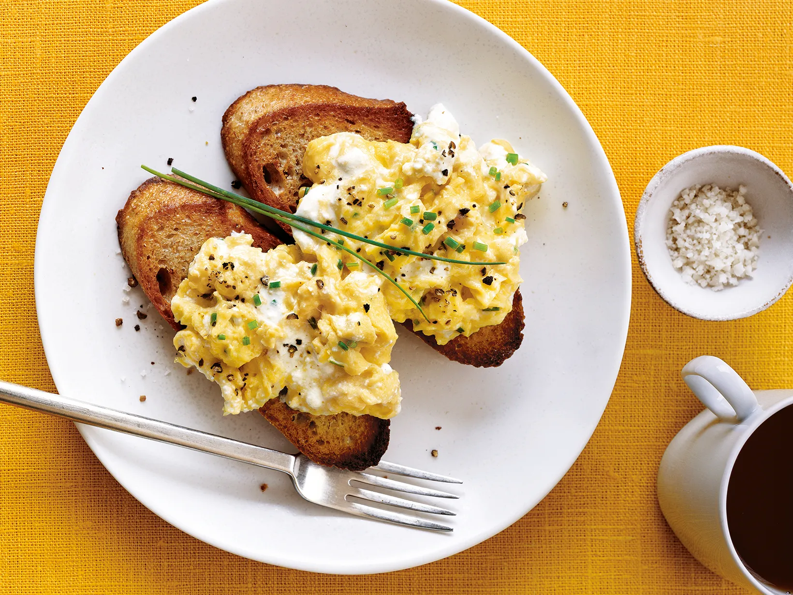

A delicious and savory eggs, easy to make at home
Invented my Yours truly
Ingredients
- 1 dozen eggs
- 1/4 cup of butter
- 1/4 cup of chopped garlic
- 1/4 cup of chopped onions
- 1/4 cup of chopped bell peppers
- 1/4 cup of chopped tomatoes
- 1/4 cup of chopped basil
- 1/4 cup of chopped parsley
- 1/4 cup of chopped oregano
- 1/4 cup of chopped thyme
- 1/4 cup of chopped rosemary
- 1/4 cup of chopped sage
- 1/4 cup of chopped chives
- 1/4 cup of chopped mint
- 1/4 cup of chopped cilantro
Instructions
- Heat a large skillet over medium heat
- Add the butter to the skillet and let it melt
- Add the garlic, onions, and bell peppers to the skillet
- Cook until the vegetables are soft and fragrant
- Crack the eggs into the skillet and cook until the whites are set
- Season the eggs with salt and pepper to taste
- Serve the eggs hot, garnished with tomatoes, basil, parsley, oregano, thyme, rosemary, sage, chives, mint, and cilantro
Return to Top
Return to Main Page